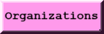

|
 |
 |
 |
 |  |
What's up about Amy? |
|---|
| I am a Film student at the University of Rhode Island. I first started out as a research and development intern for PPE, collaborating with various small businesses and reaching out to ask clients' their wants. Using my knowledge from this role, as well as my expertise in Adobe Premiere and Audition, I volunteer as the main sound designer for a permanent museum exhibit, spending up to 40 hours for each weekly deadline to see this project come to fruition. I highly value working efficiently, pushing for progress, and clear communication and decision making. With my experience in digitally painting 2D assets for video games under short-development times and rendering humorous weekly artwork, I am also a rigorous 2D illustrator with a proficiency in Photoshop, After Effects, and 2D animation. Furthermore, as a film student at URI, I am familiar with the process of film post/production and project planning, being able to work both in teams and independently. My current goal is to get a head-start in my search for a career in film/video production. Due to my excitement to work, I earned a spot on the Dean's List several times and am graduating a year early from my university. |

|
| My oldest cat is named Baron, after the Ghibli movie The Cat Returns. I adopted him from Puerto Rico and he is about 2 years old. Baron loves to cuddle, chew weird things, and peek his head from outside the shower curtains. He loves to go outside and would make sad meows until I harness him up. Sometimes when I am tending my garden, I remove grass growing too close, rinse them, and let Baron eat them from a paper plate because he is a special twerp. |
|
| During my fall and spring 2021-2022 semesters at URI, I lived on-campus in a LLC. Every weekend I would visit my parents, so I would buy pizza, gelato, and the occassional clam chowder. Baron may be found sleeping on top of the pizza box, preventing people from eating any slices. He also did this with a birthday cake for my mother, squishing it to one side. |
|
| Here is garden bed I built during autumn. I do not have a photo of it as of current, but it is now filled with my hopes and dreams which include tomato plants. |